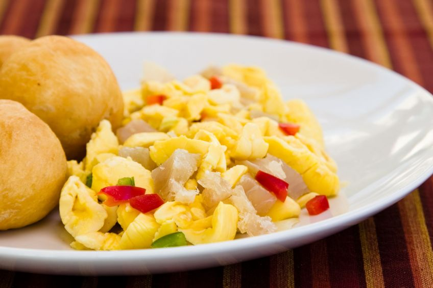

Ackee and Saltfish Recipe
Ackee and Saltfish is one of the traditional Caribbean dishes. Just like a tomato, the Ackee is a member of the fruit family, but it can also be used as a vegetable. Ackee has a creamy texture, and has a delicate feel to it, similar to eggs. It also has a rather bitter aftertaste.
Ingredients
- A can of fresh ackee
- 1/3 pounds of boneless and skinless saltfish
- 1 finely chopped scotch bonnet pepper
- Fresh thyme
- 1 cubed medium tomato
- ¼ teaspoon black pepper
- 2 teaspoons of olive oil
- 2 scallions
- ¼ chopped sweet bell pepper
- 2 cloves of garlic
- ¾ teaspoon tomato paste
Steps
- Begin by boiling the salted fish in a pot on high heat, then simmer for 15 minutes. If you want, you can soak the saltfish in cold water overnight before you begin boiling it.
- Once you’re done boiling, drain the water, rinse the fish in cold water, and then squeeze it dry.
- Break the fish into small pieces.
- Next, open up the can of ackee, place everything in a strainer, and rinse with cold water.
- Heat some olive oil in a pan, then sauté the thyme, scotch bonnet pepper, garlic, tomato and onions, and scallions together for a few minutes.
- Add in the cod and tomato paste. Stir and simmer for an additional five minutes.
- Add in the drained ackee, but do not stir since you don’t want the ackee to break into pieces.
- Sprinkle with black pepper, and serve.